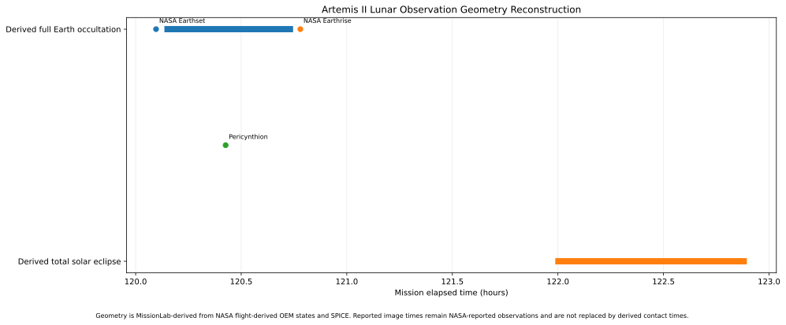

Through Orion's windows
See Artemis II through the changing view outside Orion.
Move through 25 curated mission moments from outbound coast to lunar science, Earthset, the far side, eclipse observations, Earthrise, and the journey home.
Through Orion’s windows
Experience Artemis II as the view, geometry, crew, and ground teams changed around you.
Move through 25 mission moments spanning outbound coast, lunar approach, real science targets, Earthset, far-side operations, closest approach, eclipse observations, Earthrise, and the journey home. Every stop labels exactly what kind of evidence you are seeing.

MISSION VIEW 01 / 25
Earth becomes a world behind you.
As Orion leaves Earth, the crew can watch the planet shrink against black space. This photograph is mission-phase imagery, not asserted to be the exact view at a reconstructed timestamp.
Earth is becoming a small target while Orion transitions from near-Earth operations to deep-space flight.
The changing apparent size and line-of-sight geometry make the scale of the lunar mission intuitive.
Show the engineering behind the window viewsimage provenance · mission clock · SPICE geometry · precision
Photography and geometry are different evidence layers.
MissionLab aligns NASA image metadata, crew observations, public event times, OEM trajectory states, and SPICE geometry. An image is labeled as an exact event image only where NASA metadata supports that claim. Near-event or representative imagery stays labeled that way.
Open the lunar-science deep dive →